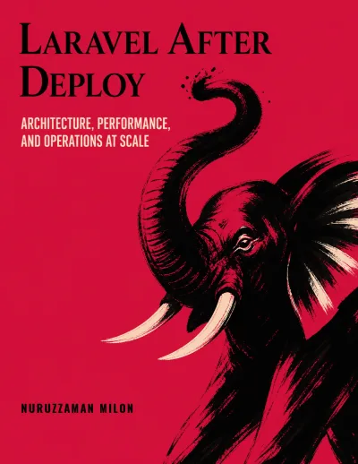

Laravel After Deploy
Architecture, Performance, and Operations at Scale
Written for mid-to-senior Laravel engineers, and for backend engineers on other stacks who can read PHP and want a production playbook in one mature framework rather than a polyglot cookbook. The examples are Laravel; the problems are not.
Preface
Shipping is the easy part. The hard part starts after deploy. A flash sale or a viral post turns usual traffic into a spike. Bots hammer your login endpoint. A dependency you don’t control has a bad afternoon. The same webhook arrives twice. The on-call phone rings at 3 a.m. and the answer isn’t in the framework docs. This book is about that layer: the decisions that keep a real system fast, correct, and operable once it’s already in production.
Every code example is Laravel and PHP. That is a practical choice. One stack, end to end, so each failure can be shown against real framework seams: Eloquent, queues, Horizon, Sanctum, the container, the scheduler. The problems themselves are not Laravel-only. Idempotency, backpressure, observability, failure isolation, and schema changes under load show up in any language. If you can read PHP, you can carry the patterns home even when your implementation looks different.
Contents
Eight parts, ordered by dependency rather than importance. Part 1 and Part 2 build vocabulary later parts assume. Beyond that, most parts stand on their own.
Foundations
- 1 Monolith vs. Modular Monolith vs. Microservices
- 2 The Shared Kernel Problem
- 3 Multi-App Monorepos in Practice
- 4 Carving Out a Service
- 5 Designing for Vendor Replaceability
- 6 Structuring Third-Party HTTP Integrations
- 7 Upgrading & Refactoring Laravel at Scale
Performance Engineering
- 8 Database Performance Fundamentals
- 9 Safe Schema Evolution at Scale
- 10 Multi-Tenancy at Scale
- 11 Caching Strategies
- 12 Images on S3, CDNs, and Cache Invalidation
- 13 Queues & Background Processing at Scale
- 14 Long-Running PHP with FrankenPHP Worker Mode
- 15 Real-Time Systems & WebSockets at Scale
- 16 Rate Limiting & Abuse Protection
- 17 Load Testing & Capacity Planning
- 18 Search at Scale with a Third-Party Search Engine
Correctness Under Load
- 19 Money, State Machines, and Idempotency
- 20 Webhook Authenticity & Replay Protection
- 21 Inventory & Reservations Under Concurrency
- 22 Case Study: From Mutable Balance to Append-Only Ledger
- 23 Event Sourcing in Laravel
- 24 Distributed Transactions Without Two-Phase Commit
- 25 Working with Datetime and Timezones
High Availability & Resilience
- 26 Designing for Failure
- 27 Data-Layer High Availability
- 28 Disaster Recovery & Backups
- 29 Feature Flags & Progressive Delivery
- 30 Chaos Engineering & Game Days
Observability & Monitoring
- 31 The Three Pillars in a Laravel Application
- 32 The Production Dashboard for a Laravel App
- 33 Alerting & SLOs
Deployment & CI/CD
- 34 CI Pipelines for Monorepos
- 35 Container Deployments
- 36 The Laravel Release Checklist
- 37 Infrastructure as Code for Laravel
- 38 Coordinated Frontend & Backend Releases
- 39 API Versioning & Backward Compatibility
Operations
- 40 Security in Production
- 41 Sanctum, JWT, and Auth Across Services
- 42 The Admin Panel at Scale
- 43 Runbooks & On-Call
- 44 Cost & Capacity Management
- 45 AI-Assisted Development on a Laravel Team
Capstone
- 46 Putting It Together
Free sample
The sample includes the front matter, the preface, and three full chapters: Chapter 9 on schema evolution, Chapter 16 on rate limiting and abuse protection, and Chapter 25 on datetime and timezones. No email required.

Get the book
Four formats, sold in two places. The ebooks come from my own store; print and Kindle go through Amazon.
PDF & EPUB
Both files in one purchase, with no DRM and no account to create. Download starts as soon as you check out.
Buy from the storePaperback & Kindle
740 pages in print, or the Kindle edition for your library. The link opens your local Amazon storefront.
Buy on AmazonNuruzzaman Milon
Nuruzzaman Milon is a software engineering leader and open-source creator who also organizes tech community events. He has worked in tech hubs in Asia, Europe, and North America.
His first book, Laravel PHP Web Framework (Dimik Publication, 2015), ran to two editions. Both were best-sellers in Bangladesh and West Bengal.
He lives near Vancouver with his wife and three children.
More at milon.im →